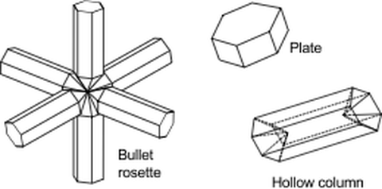
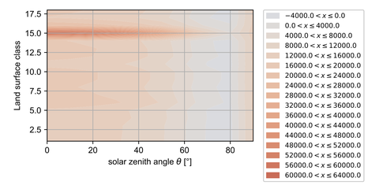
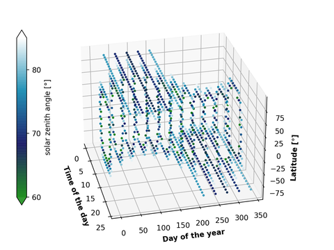

Contrails are ice clouds formed behind aircraft in a cold and ice-supersaturated atmosphere. Line-shaped cirrus clouds, which have even been included in the Cloud Atlas by the World Meteorological Society as ‘Cirrus homogenitus’, can cool and warm the Earth-atmosphere radiation system. The dominant effect depends strongly on the lifetime and the microphysical properties of the contrail, as well as on the place and time of formation. In the ICATO project, these conditions are being investigated in detail and the resulting findings are implemented in the TOMATO simulation environment for trajectory optimization.
In the ICATO project, these conditions are investigated in detail and the findings are prepared for the integration into a simulation environment for aircraft trajectory optimization.
When Do Contrails Form?
Contrails are formed by condensation of atmospheric water vapor on hydrophilic emissions (e.g. soot particles) from the engines. To ensure that the emitted (engine) heat does not prevent condensation, the atmosphere must be very cold. The critical temperature TLM can be calculated using the Schmidt-Appleman Criterion: If the straight mixing line intersects the curve of saturation vapor pressure e*, contrails are formed.


For contrails to develop into long-lasting cirrus clouds, the atmosphere must also be supersaturated with respect to ice. This happens in the atmosphere near the tropopause when there is sufficient water vapor available for natural cloud formation, but no natural condensation nuclei (e.g. salt crystals from seawater, desert sand or flower pollen). Our data analyses from modelled weather data in 2023 have shown a probability of ice supersaturation of 30 % to 50 % in the northern hemisphere. (Rosenow & Köhler, 2024) .
How Long Do Contrails Last?
In order to estimate the optical properties of contrails, both their microphysical properties and their lifetime must be determined. Our lifetime model calculates the mixing of the contrail with the atmosphere using a sheared Gaussian plume model (Rosenow & Fricke, 2023). The model has been validated in Central Europe and is publicly available in the GitHub repository intersected_contrails.
The ice particle shapes depend on the temperature and the ice particle size increases as it grows into the ice-saturated air. The initial number of ice crystals is determined by the number of soot particles emitted. Subsequently, the crystals can fragment or clump together.
During its lifetime, the contrail is pushed in all directions by the wind. If it is not lifted upwards by the wind, the contrail falls downwards due to gravity. If the contrail leaves the ice-saturated layer or the ice water content falls below a critical value, the life of the contrail is over

This means that the lifespan is largely dependent on the size of the ice-saturated layer and the prevailing winds. Under typical vertical wind conditions, contrails live for several hours even in thin ice-saturated layers2.

Figure XXXX quantifies the probability of the identified small upwind speeds $10^{−4}$ ≤ v_z ≤ $10^{−2}$ m/s as a function of latitude between 12% and 35% in April 2023. Thereby, an impact of the longitude could not be identified.

What Is the Impact on the Radiation Budget?
Contrails act like a barrier in the Earth-atmosphere radiation balance. They scatter parts of the solar radiation back into the atmosphere (cooling effect). They also absorb and re-emit terrestrial radiation back to the Earth's surface (warming effect). The dominant effect can be determined using a Monte Carlo simulation (Rosenow & Fricke, 2019). The model and code are publicly available in the GitHub repository rf-contrails.

Due to the strong forward scattering, the optical properties depend not only on the size and number density of the ice crystals, but above all on the solar zenith angle and the intensity of the incoming radiation. The figure shows the radiation balance of contrails [W/(m$^2$)] as a function of the position of the sun and the land use class. A cooling effect is therefore only likely at large solar zenith angles, e.g. during sunrise and sunset.

This angle varies in duration depending on the time of year and location. In the mid-latitudes between spring and fall, large angles occur for one to two hours during sunrise and sunset. In winter, large angles occur around midday for five consecutive hours.

Publications
- Judith Rosenow and Sophie Köhler (2024): Astronomical, Atmospheric, and Lifetime-specific Requirements for Cooling Contrails , SESAR Innovation Days 2024, Rome, Italy, November 2024. DOI: 10.61009/SID.2024.1.09
- Judith Rosenow, Hartmut Fricke (2023): Validation of a Contrail Life-Cycle Model in Central Europe, Sustainability 15(11):8669
- Judith Rosenow, Hartmut Fricke (2019): Individual Condensation Trails in Aircraft Trajectory Optimization, Sustainability 11(21):6082
- Judith Rosenow (2016): Optical Properties of Condensation Trails, PhD Thesis, TU Dresden
Projects
The results of the ICATO project are integrated into the TOMATO simulation environment to optimize sustainable flight trajectories.
Project Link: GitHub: TOMATO Simulation